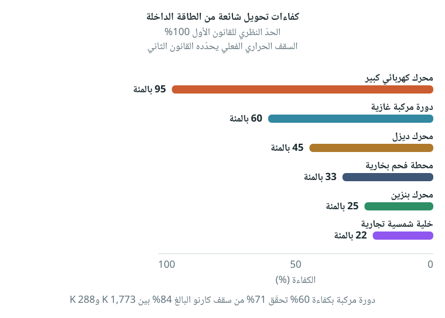

كفاءة الطاقة
Energy Efficiency
نسبة الناتج المفيد إلى الطاقة الداخلة في عملية تحويل. القانون الأول يمنع تجاوز 100%، والقانون الثاني يضع سقفًا أدنى هو حدّ كارنو، فمحرّك بكفاءة 40% حقّق 48% من سقفه الحراري.
كفاءة الطاقة نسبة الناتج المفيد إلى المدخل في عملية تحويل. القانون الأول يمنع تجاوز 100%، لكنه لا يمنع كفاءة 20% في جهاز سليم: الباقي لم يُفقد، بل تحوّل إلى حرارة عند درجة أدنى. القانون الثاني هو الذي يحدّ السقف، ويُعبَّر عنه بحدّ كارنو لدورة تعمل بين 1,773 K و288 K، أي 84%.
الفرق العملي بين الرقمين ليس تفصيلًا نظريًّا: محرّك بكفاءة 40% لم يفشل، بل حقّق 48% من سقفه الحراري. تحسين الكفاءة يتطلب تقليل الفرق بين الحرارة الداخلة والمطروحة، أو استعادة الحرارة المطروحة في تطبيق آخر، كما في الدورة المركبة والتوليد المشترك.
كيف تعمل الظاهرة؟
كل تحويل بين صور الطاقة يتضمن إنتروبيا. في محرّك حراري يستقبل حرارة Q_h ويؤدي عملًا W ويطرد Q_c، وتنصّ ميزانية الطاقة على Q_h = W + Q_c. لكن الشرط الثاني أن تكون إنتروبيا الطرح أكبر من إنتروبيا الاستقبال: Q_c/T_c ≥ Q_h/T_h. بجمع الشرطين نحصل على W/Q_h ≤ 1 − T_c/T_h، أي أن الكفاءة القصوى تُحدَّد بالحرارتين لا بالتصميم. تقليل الاحتكاك يرفع الكفاءة الفعلية نحو هذا السقف، ولا يرفع السقف نفسه.
العلاقة بالأرقام
محرّك يعمل بين 1,773 K أي 1,500 °م و288 K أي 15 °م: η_carnot = 1 − 288/1,773 = 84%. دورة مركبة حديثة بكفاءة 60% تحقّق 71% من سقف كارنو، أي 60 ÷ 84. مصباح LED بلمعان 100 lm/W مقابل مصباح وهاج 15 lm/W يعطي ضوءًا أكثف 6.7 مرة عند الكهرباء نفسها، لأن الوهاج يحوّل نحو 95% من الطاقة إلى حرارة. ومضخة حرارية بمعامل أداء 3.5 تسلّم 3.5 kWh حرارة لكل 1 kWh كهرباء، وهذا لا يخالف القانون الأول لأنها تنقل حرارة ولا تولّدها.
مفاهيم متقاربة
الخلط الأول: كفاءة القانون الأول تُقارن بالناتج المفيد، وكفاءة القانون الثاني تُقارن بالسقف الحراري المتاح. رقم 60% لكفاءة الأولى يعني 71% للثانية في المثال نفسه، والخلط بينهما يجعل محرّكًا ممتازًا يبدو متوسطًا. الثاني: معامل الأداء ليس كفاءة، فهو قد يتجاوز 1 لأن المقام كهرباء والمخرج حرارة منقولة لا مولَّدة، فلا يُقارن بكفاءة محرّك. الثالث: كفاءة المصباح تُقاس باللومن لكل واط لا بالواط المستهلكة، ولمعان الضوء يخضع لحساسية العين لا لكمية الطاقة.
حدود التطبيق
حدّ كارنو يفترض عمليات عكوسة بين خزّانين بدرجتين ثابتتين، ولا ينطبق على الاحتراق الداخلي حيث لا توجد درجة واحدة للحرارة الداخلة، ولهذا يُستخدم كمرجع لا كسقف دقيق. وفي المضخات الحرارية والتبريد يعتمد الأداء على فرق الحرارة بين المصدر والمصرف، فيتدهور في الجو الحار. أما في الإضاءة والمحركات الكهربائية فالسقف النظري 100%، والحدّ العملي يحدّده الفقد النحاسي والحديدي والحرارة المسموحة للعزل، لا القانون الثاني.

| الكمية | القيمة | المصدر |
|---|---|---|
| سقف كارنو بين 1,773 K و288 K | 84 % | [2] |
| كفاءة دورة مركبة حديثة | 60 % | [1] |
| نسبة ما تحققه من سقف كارنو | 71 % | [2] |
| نسبة لمعان LED إلى الوهاج عند الكهرباء نفسها | 6.7 مرة | [1] |
المصادر
- 1 Energy Efficiency — U.S. Department of Energy, EERE. www.energy.gov/eere/energy-efficiency · اطُّلع عليه 2026-11-16
- 2 Heat Engines — OpenStax, University Physics Volume 2. openstax.org/books/university-physics-volume-2/pages/4-2-heat-engines · اطُّلع عليه 2026-11-16
استشهد بهذا المصطلح
الصيغتان مبنيتان من بيانات الصفحة نفسها: العنوان والتاريخ ورابط النسخة المنشورة.
كفاءة الطاقة — Energy Efficiency. (2026). ديوان المعرفة — انفراد. https://infiradev.com/diwan/terms/energy-efficiency.html
@misc{energy-efficiency2026,
title = {كفاءة الطاقة},
titleaddon = {Energy Efficiency},
howpublished = {{ديوان المعرفة — انفراد} — مرجع علمي عربي},
year = {2026},
url = {https://infiradev.com/diwan/terms/energy-efficiency.html},
urldate = {2026-11-16},
note = {مراجعة علمية: مراجعة آلية — ديوان المعرفة (روابط المصادر + عقد المحتوى + وجود الرسم) 2026-11-16}
}
راجعه: مراجعة آلية — ديوان المعرفة (روابط المصادر + عقد المحتوى + وجود الرسم) 2026-11-16 · 2026-11-16 · آخر تحديث 2026-11-16